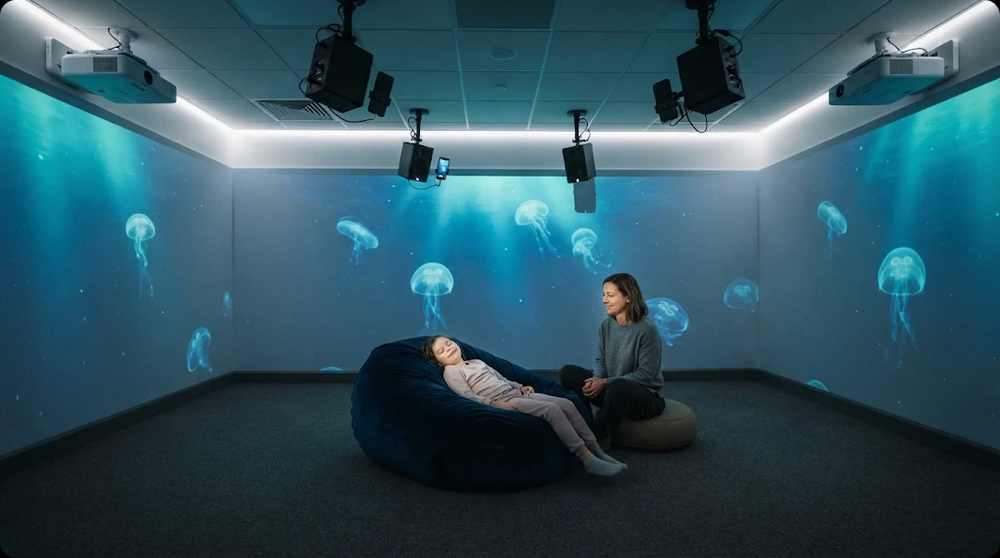
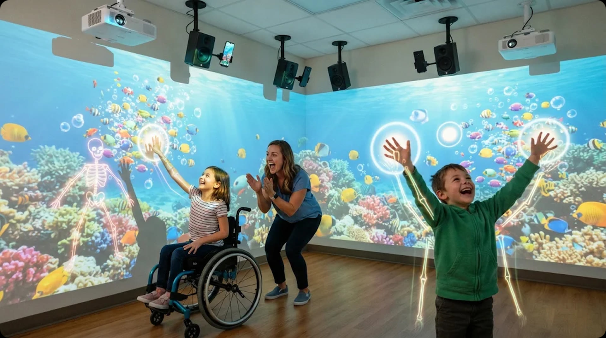
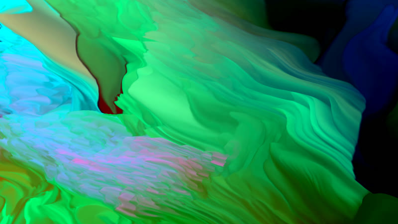
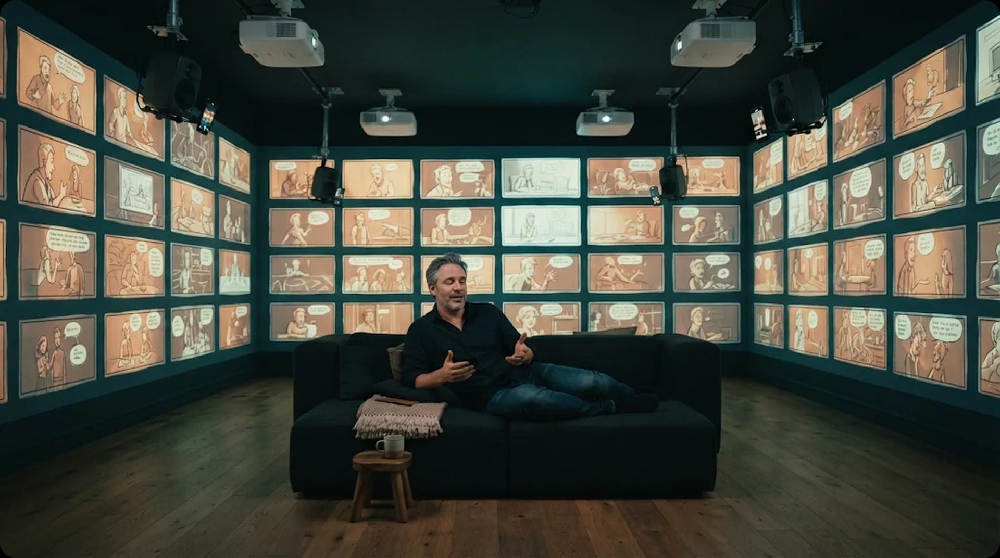
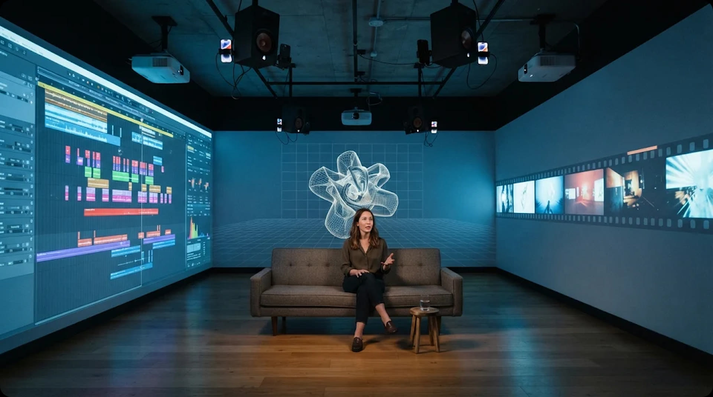
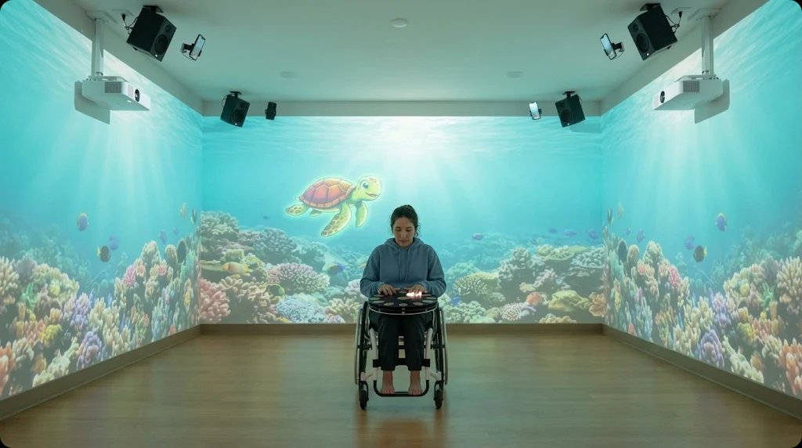
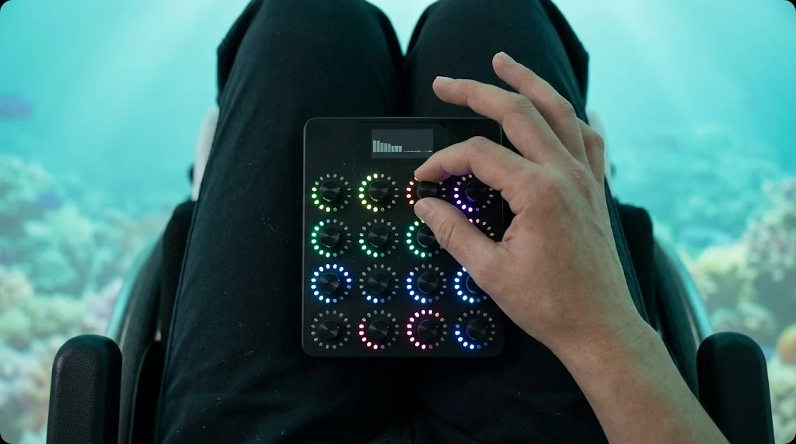
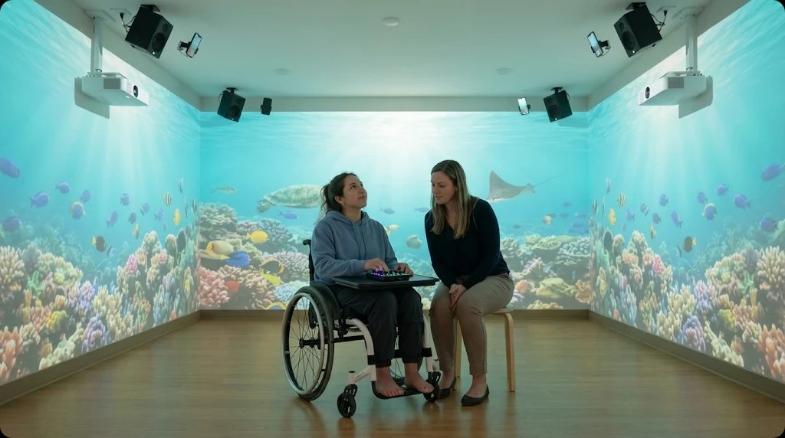
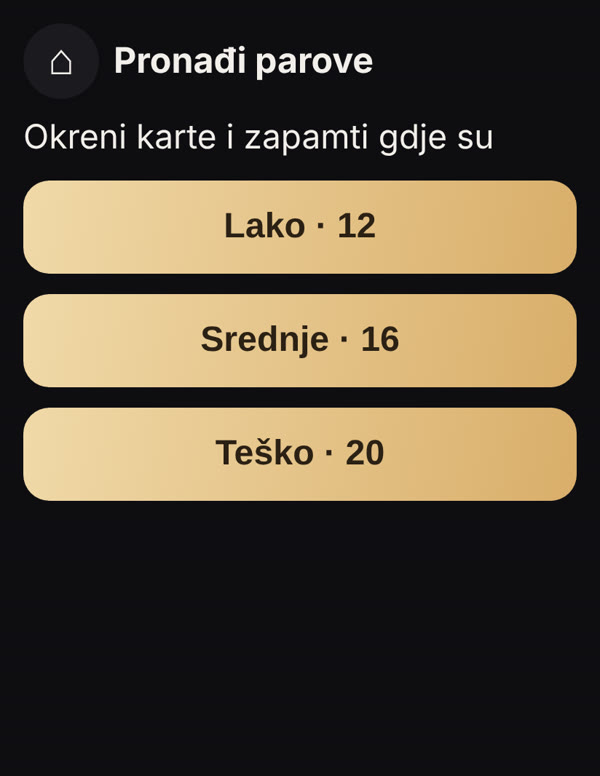

01 · Terapija
Soba pod morem
Osoba u invalidskim kolicima sjedi usred sobe, a oko nje pliva karipski greben. Zvuk dolazi iz cijele sobe, kao da je stvarno pod morem. Ništa se ne mora raditi. A kad osoba to poželi, soba odgovara na njezin pokret i glas.

Na podu nema ničega osim ljudi i jednog subwoofera u kutu, daleko od mjesta gdje se voze kolica. Težak je 27 kg i velik 527 x 462 x 363 mm, a tako težak uređaj se ne vješa iznad ljudi. Uz svaki zid sa stropa visi ultrakratki laserski projektor, a oko sobe osam malih zvučnika Genelec 8320A na Genelecovim stropnim nosačima. Uz svaki zvučnik je Android mobitel: na ekranu pokazuje što taj zvučnik svira, a kamerom gleda u sobu i zna gdje je osoba. Kad se osoba približi zvučniku, njegov zvuk se mijenja.
Igra pokreta: opuštanje i aktivacija

Moja aplikacija Skeleton na sliku osobe stavlja kostur od točaka i linija. Terapeut odabere pokret, aplikacija ga pokaže kao prozirnu siluetu, a kad ga osoba pogodi i zadrži, dolazi nagrada u slici i zvuku. Težinu određuje terapeut, od vrlo blage do točnije.

Opuštanje
Spori, mali pokreti: ruke se dižu s udahom. Tamna voda i meduze. Nagrada je nježna: kit zapjeva iz kuta sobe.

Aktivacija
Veći pokreti: ruke u zvijezdu, dohvati krug svjetla. Svijetao greben. Nagrada je vesela: jato riba proleti cijelom sobom.
Pjevaj i dobij svoju pjesmu

Osoba otpjeva nekoliko taktova u mikrofon, terapeut pritisne gumb, i za minutu iz svih zvučnika dođe cijela pjesma nastala iz te melodije. To radi Suno: besplatni račun daje oko deset pjesama dnevno za osobnu upotrebu. Da pjesmu pjeva baš glas te osobe, treba plaćeni paket i osoba svoj glas mora sama potvrditi. Za djecu uz pristanak roditelja.
Snimanje u 3D

U sredini stropa visi Zylia, jedna kugla s 19 mikrofona. Snima prostor u tri dimenzije, pa se pjesma, bubnjanje u krugu ili glas terapeuta mogu poslije reproducirati na osam zvučnika točno kako su zvučali. Četiri viseća mikrofona snimaju izbliza.
Boja, zvuk i glazba

Na zidovima mogu biti i moje MilkDrop vizualizacije: tekuće slike koje nastaju iz glazbe. Za terapiju biram samo spore predloške, bez bljeskova.


myNoise: zvučni pejzaži
myNoise je internetska stranica i aplikacija sa stotinama zvučnih pejzaža: kiša, more, šuma, vjetar, vatra, zdjele koje pjevaju. Izradio ju je belgijski inženjer zvuka Stéphane Pigeon od vlastitih snimki. Ljudi je koriste za opuštanje, san i usredotočenost.
Posebna je po tome što zvuk nije gotova snimka, nego deset kanala koje slušatelj sam podešava, od dubokog tutnjanja do sitnih kapi.
Kiša More Prašuma Vjetar Zdjele koje pjevaju
Zvukovi myNoisea besplatni su samo za osobno, privatno slušanje. Za svaku drugu upotrebu potrebna je licenca koju dogovara autor; pogledaj njegovu stranicu.
DJ Mantra: ambijentalna playlista
Za mirne trenutke složio sam playlistu mekane, ambijentalne glazbe. Počinje s pjesmom Miss You od Trentemøllera, a dalje su Chantress Seba, Nils Frahm, Ólafur Arnalds, Brian Eno i Hania Rani.
02 · Analiza pokreta
Laboratorij pokreta: hod prije i poslije terapije
Isti prostor postaje laboratorij za analizu ljudskog pokreta, bez markera i odijela: dovoljno je ući u krug.

Sa stropa visi prsten promjera tri metra s dvanaest mobitela, svi okrenuti prema sredini. U sredini prstena je 3D mikrofon. Prsten mobitela snima osobu iz svih smjerova, a moja aplikacija Skeleton na svakoj snimci označi zglobove. Iz više kamera nastaje trodimenzionalni kostur koji se može izmjeriti.

Isti hod snimimo prije i poslije terapije i usporedimo ga na zidu: duljinu koraka, simetriju, ritam, držanje i opseg pokreta u zglobovima. Brojke ne zamjenjuju procjenu terapeuta; daju joj trag koji se može pratiti kroz mjesece.
Hod
Duljina i ritam koraka, simetrija lijeve i desne strane, prije i poslije terapije.
Opseg pokreta
Koliko se ruka diže, koljeno savija ili trup okreće, iz sesije u sesiju.
Ravnoteža
Njihanje tijela u stajanju i pri prijelazima, uz igru na zidu kao motivaciju.
Usporena snimka
Iz dvanaest kamera može se napraviti i "bullet time": pokret zamrznut i obiđen sa svih strana, za nastavu i za samu osobu.
Za 3D zglobove iz više kamera postoji otvoreni alat Pose2Sim. Istraživanja s takvim sustavima (npr. OpenCap, 2023.) pokazuju dobru točnost za ritam koraka i kutove u bočnoj ravnini, a slabiju za rotacije i stopalo, pa je laboratorij alat za praćenje i istraživanje, a ne dijagnostika. Snimke ostaju na računalu u sobi, uz pisani pristanak.
03 · Kad soba miruje
AI laboratorij: govoriš, a soba stvara
Isti zidovi, isti zvučnici, ali bez terapije: radionica u kojoj se glasom stvara aplikacija, glazba, film, 3D svijet ili istraživanje.

Kad nema terapije, sjednem na sofu, pustim tihu glazbu i razgovaram s Claudeom; ono što opišem pojavi se na zidovima. Glazba i spora slika vode u opušteno, budno stanje, kakvo se obično povezuje s alfa i theta ritmom; meni u njemu ideje dolaze lakše. Ruke ostaju slobodne, nema tipkovnice ni miša: samo glas i četiri zida.
- Sjedneš na sofu, svjetlo se priguši, svira tiha glazba.
- Slušaš: AI ti čita tekst ili scenarij naglas, prirodnim glasom.
- Kažeš što ti nije jasno: "Ne razumijem ovaj dio, napravi mi storyboard."
- Gledaš kako se za nekoliko minuta storyboard pojavljuje na zidovima oko tebe.
- Doradiš glasom: "Treći kadar bliže, više svjetla, dodaj glazbu." I opet.

Claude je mozak sobe: piše aplikacije, slaže glazbu u Abletonu, montira u DaVinci Resolveu, modelira i animira u Blenderu, a slike, video i zvuk izrađuje Higgsfield. Sve što se stvori odmah se vidi i čuje u cijeloj sobi.
- Claude Code mozak: razumije, planira, piše
- Ableton Live glazba i prostorni zvuk
- DaVinci Resolve montaža i boja
- Blender 3D i animacija
- Higgsfield slike, video, zvuk u videu
- Speechify čitanje naglas
To nije budućnost, to već radim
Sve svoje aplikacije napravio sam razgovarajući s Claude Codeom. U ovoj sobi takve se stvari rade sjedeći na sofi.
Sedam aplikacija koje sam već napravio glasom
- Blender Control: AI na Mac miniju uređuje otvorenu scenu u Blenderu, radi snimke ekrana i renderira animacije.
- DaVinci Resolve Actions: gumbi i skripte za korekciju boje, izradu timelinea i izvoz u DaVinci Resolveu.
- Ableton Live Actions: spaja miksetu s Abletonom i sam priprema set kad se otvori.
- Vox to Txt: pritisneš F1, govoriš, i riječi se upišu gdje god je kursor.
- Mantra Manual Camera: mobitel postaje profesionalna kamera s ručnim postavkama i NDI izlazom.
- Cloud Mixer: miješa snimke, slike i prijenose uživo u jedan program s natpisima.
- Shruti Box: bordun, rage i akordi te trener glasa koji vodi kroz raspon.

04 · Za fakultet
Što soba daje ERF-u
Osim terapije, soba je mjesto za istraživanje, nastavu, disertacije i eksperimente. Evo što mogu zamisliti za vaše odsjeke.

Istraživanje pokreta
Mjerljivi podaci o hodu i pokretu za radove odsjeka.
Primjer: ista skupina djece snimljena na početku i kraju semestra.
Doktorske disertacije
Snimanje, obrada i prikaz podataka glasom, bez programiranja.
Primjer: "Usporedi duljinu koraka za svih dvadeset ispitanika i nacrtaj grafikon."
Studije slučaja
Svaka sesija ostaje zapisana: pokret, zvuk, bilješke terapeuta.
Primjer: pregled napretka jednog korisnika kroz šest mjeseci na zidu.
Usporedba korisnika
Grafikoni koji uspoređuju korisnike, terapije ili skupine.
Primjer: dvije metode terapije, jedna pored druge.
Nastava i praksa
Studenti uče gledati pokret i vode terapiju uz povratnu informaciju.
Primjer: usporena 3D snimka hoda za predavanje.
Skice i eksperimenti
Ideja izgovorena ujutro, aplikacija ili scena isprobana popodne.
Primjer: nova igra za ravnotežu za jednu djevojčicu.
Logopedija
Snimanje glasa i govora te priče i slike složene oko riječi koje dijete vježba.
Primjer: priča s pet riječi s glasom R, s ilustracijama na zidovima.
Autizam i senzorika
Mirna soba prilagođena osjetilnom profilu svakog djeteta.
Primjer: tiše boje i manje zvukova za dijete osjetljivo na podražaje.
Oštećenja vida i sluha
Orijentacija po zvuku iz osam smjerova i velik, kontrastan prikaz.
Primjer: igra "odakle dolazi zvuk" za dijete slabijeg vida.
Istraživanja višeosjetilnih soba još su malobrojna i dokazi su ograničeni (npr. pregled iz 2025.), pa sobu vidim kao mjesto koje stvara nova istraživanja, a ne kao dokazanu terapiju. O svemu odlučuje terapeut, a svaka snimka nastaje uz pisani pristanak.
05 · Prijedlog projekta
MIDIPan: igre za prste
Ovo je prijedlog, ne gotova aplikacija. Predlažem igre koje uz pomoć računala vježbaju spretnost prstiju.



Slike su ilustracija ideje, napravljene umjetnom inteligencijom. To nisu fotografije stvarnih ljudi.
Uređaj koji imam kod kuće
MIDIPan je okrugla ploča osjetljiva na dodir, nalik bubnju handpan. Napravila ga je Shiela Dixon (Etsy trgovina shieladixon). Na slikama oglasa vidi se dvanaest ovalnih polja u krugu i jedno veće okruglo polje u sredini. Šalje MIDI preko USB-a, pa ga računalo može čitati.
Ideja
Osoba dotakne sredinu i igra počinje. Glas kaže na primjer: „dotakni polje 1 kažiprstom”, pa zatim prstenjakom, i tako redom sa svih deset prstiju. Polja svijetle i pokazuju put. Za svaki pravi dodir dolazi nagrada: na projiciranom zidu sobe pojavi se lik, na primjer kornjača. Računalo vodi, a prsti se razgibavaju.
Ne obećavam nikakav rezultat i ne tvrdim ništa medicinsko. Ovo je ideja za razvoj zajedno s ljudima iz struke, za osobe s invaliditetom koje žele vježbati finu motoriku kroz igru.
Ne znam što je vašem fakultetu i vašim korisnicima zapravo potrebno. Recite mi što bi im pomoglo, pa ćemo igru prilagoditi.
06 · Prijedlog projekta
OXI E16: sobom upravljaš rukom
I ovo je prijedlog, ne gotova aplikacija. Predlažem upravljač sa šesnaest gumba kojim se zvuk i svjetlo sobe mijenjaju rukom, bez ekrana.


Slike su ilustracija ideje, napravljene umjetnom inteligencijom. To nisu fotografije stvarnih ljudi.
Upravljač koji imam
OXI E16 je MIDI upravljač tvrtke OXI Instruments. Ima šesnaest okretnih gumba koji se okreću glatko, bez škljocanja, a svaki je okružen prstenom svjetala u boji. Mali zaslon pokazuje vrijednosti. Širok je 114 mm, dubok 143 mm, visok 36 mm i težak 0,37 kg, u aluminijskom kućištu. S računalom se spaja USB-om, a podržava i MIDI preko TRS priključka te Bluetooth MIDI. Cijena 449 € (očitano 22.11.2026, na stranici proizvođača).
Ideja: jedan gumb, jedan zvučnik
Soba ima osam zvučnika koji vise oko osobe. Osam od šesnaest gumba bilo bi po jedan za svaki zvučnik. Svaki se gumb može i pritisnuti. Okretanjem se podešava glasnoća tog zvučnika, a pritiskom bi se na njemu prešlo na sljedeći zvuk. Prsten svjetla bojom pokazuje koji je zvuk na tom zvučniku, a duljinom koliko je glasan. Razine na mikseru mogu se namještati i aplikacijom CQ MixPad s mobitela; kako bi gumbi E16 izravno mijenjali razine miksera (mikser prima MIDI preko USB-a), tek treba izraditi i isprobati.
Tako osoba, ili terapeut uz nju, sama gradi zvuk oko sebe: pritiskom pregledava zvukove, okretanjem ih pojačava, a iz svakog smjera može dolaziti drugi instrument. Zvuk ne mora biti snimka, može biti i napravljen (virtualan). Što se okrene, odmah se vidi na prstenu gumba i na zidu.
Ostalih osam gumba mogli bi, na primjer, mijenjati boju i svjetlinu svjetla u sobi, brzinu projicirane slike i glavnu glasnoću, uz gumb „mir” koji sve zajedno tiho spušta. Samo spore promjene, bez bljeskanja, kao u probnom terapijskom načinu.
Zvuk bi dolazio iz našeg lokalnog sustava, koji namjeravam razviti za ovu sobu i koji bi radio na računalu u sobi, s vlastitim zvukovima. Radio bi na način na koji rade generatori zvuka s odvojenim klizačima; najpoznatiji je myNoise. Naš sustav ne koristi ništa od myNoisea. Ništa od ovoga još ne postoji.
Instrumenti zvučne kupke
Zvučna kupka (sound bath) je slušanje: osoba sjedi ili leži, a netko oko nje svira duge, tihe tonove. Ljudi je opisuju kao smirujuće slušanje; ne tvrdim ništa o liječenju. Ovo su instrumenti koji se u njoj obično spominju.
Zdjele i gongovi
- Tibetanske (himalajske) zdjele · Tibetan singing bowls: metalne zdjele, dug zvonak ton
- Kristalne zdjele · crystal singing bowls: čist, visok, dugo se gasi
- Gongovi · gongs: duboki, šumeći ton koji raste
Zvončići i zvona
- Koshi zvončići · chimes: meki, harmonični tonovi
- Mala zvona · small bells: kratak, svijetao ton
- Vilice za ugađanje · tuning forks: jedan čist ton
Bubnjevi i zvečke
- Okvirni i šamanski bubnjevi · frame and shamanic drums: spor, dubok puls
- Ocean drum · ocean drum: šum poput valova
- Zvečke i šejkeri · rattles and shakers: tiho šuštanje
- Kišni štap · rainstick: zvuk sitne kiše
Žice i bordun
- Harfe i lire · harps and lyres: tihi, razlomljeni akordi
- Shruti box · shruti box: neprekidan bordun
- Kalimba i handpan · kalimba and handpan (tongue drum): meke, kratke note
Dah i glas
- Didgeridoo · didgeridoo: nizak, neprekidan bordun
- Glas · voice: pjevušenje, ton, napjev
Popis je sastavljen iz tri izvora koja se u glavnom slažu: Dictionary.com, Cleveland Clinic i praktičarska stranica Immersive Sound Experience. Harfe i lire, zvečke i didgeridoo dodajem po svom izboru: nisu na svim popisima.
Neki od ovih instrumenata već su u dijelu 11 Nadahnuće: kristalna zvona i veliki bubnjevi. Glinene flaute Stonewhistle nisam našao na popisima zvučne kupke. Zvukovi bi bili snimljeni na pravim instrumentima ili pošteno licencirani; na stranici ih još nema.
Što bi se još moglo istražiti
- Gumb koji osoba okreće sporim, jednostavnim pokretom šake, kao dopuna MIDIPanu, koji vježba prste.
- Snimanje pokreta gumba i njihovo ponavljanje: E16 to prema stranici proizvođača može (Knob Recording).
- Spremanje cijelog miksa kao „scene” i polagan prijelaz između njih (Snapshots, prema stranici proizvođača).
Ne obećavam nikakav rezultat i ne tvrdim ništa medicinsko. Želim ga predstaviti profesorima fakulteta kao način da se sobom upravlja rukom, za osobe s invaliditetom i za sve koji sobu koriste.
Ne znam što je vašim korisnicima zapravo potrebno. Recite mi što bi im pomoglo, pa ćemo upravljanje prilagoditi.
07 · Prijedlog projekta
Zid koji odgovara na dodir
Može li projicirani zid reagirati kad ga osoba dotakne? Može, na nekoliko načina. Ovo je prijedlog za istraživanje sa stručnjacima fakulteta, ne gotov proizvod.
Što postoji
- Dubinska kamera obješena sa stropa vidi ruku ili tijelo blizu zida, a softver to pretvara u dodir (Orbbec Femto Bolt i Intelove RealSense kamere). Radi iz daljine, na zid se ništa ne ugrađuje. Ruku vidi bolje nego vrh prsta.
- Kamere same sobe: osam kamera na mobitelima i aplikacija Skeleton već nalaze ruke. Najjeftinije, ali najmanje precizno: zna reći „ruka iznad vode”, ne „dodir na ovom milimetru”.
- Laserski skener uz zid („svjetlosna zavjesa”; prvi put pokazano na MIT-u kao LaserWall, danas se koriste skeneri tvrtke Hokuyo) vidi stvarni dodir prstom, čak i na vrlo velikim zidovima.
- Infracrveni okviri za dodir rade se za ravne zaslone, u standardnoj ponudi do oko 55 inča. Za projicirani zid to nisam mogao potvrditi.
- Interaktivni projektor s dodirom (Epson BrightLink 770Fi, površina do 100 inča; za prst treba dodatnu jedinicu). Jednostavno, ali pokriva jedan zaslon, ne cijeli zid.
- Gotovi sustavi za senzorne i terapijske sobe: LUMOplay (proizvođač procjenjuje oko 2.000 do 2.500 američkih dolara za cijeli novi sustav; očitano 22.11.2026), EyeClick (sustavi od 5.796 američkih dolara; očitano 22.11.2026) i omiWall (cijena na upit).
Dodir postaje miš ili dodir, ili putuje kao TUIO, otvoreni protokol koji čitaju igraći pogoni i alati poput Unityja. Mac mini u sobi tada može reagirati.
Što odgovara ovoj sobi
Prvo bih isprobao dubinsku kameru obješenu sa stropa uz projektor. Slaže se s pravilom da na zidovima nema ničega, a na podu je samo subwoofer u kutu. Laserski skener nisko uz zid vidi pravi dodir, ali bi stajao u podnožju zida i time kršio to pravilo, pa dolazi tek kao drugi korak, ako se želi finiji dodir.
Jeftin prvi korak: jedna kamera i probno razdoblje gotovog softvera na jednom zidu. Na licu mjesta treba provjeriti visinu i udaljenost ruke osobe koja sjedi, ravnost zida i svjetlo ostalih projektora.
Što bi se moglo istražiti sa stručnjacima fakulteta
- Dotakneš vodu i ona se talasa: sporo, mirno, uzrok i posljedica.
- Riba prati ruku, osoba je vodi po zidu.
- Dotakni svijetleći oblik da kažeš „gotovo”.
- Mete na različitim visinama: visoke za ruke, niske za šake, male za prste.
- Dvije osobe dodiruju zajedno, pa se nešto dogodi tek kad dotaknu obje.
- Sve sporo, bez bljeskanja, a promašaj ništa ne kažnjava. Terapeut određuje veličinu meta i koliko dugo ostaju.
Granice: kamera vidi ruku blizu zida, ne osjeća pravi dodir, pa mete moraju biti velike i blage. Za fini rad prstima bolji je MIDIPan iz odjeljka 05. Ne tvrdim nikakav rezultat i ne tvrdim ništa medicinsko.
Izvori (pročitano 22.11.2026): Orbbec Femto Bolt, Microsoft, RealSense, Hokuyo, MIT LaserWall, Epson EB-770Fi, LUMOplay, EyeClick, omiWall, TUIO.
Slike su ilustracija ideje, napravljene umjetnom inteligencijom. To nisu fotografije stvarnih ljudi.
08 · Prijedlog projekta
Likovi od svjetla u sobi
Slobodan hologram koji lebdi u zraku kao proizvod ne postoji; „hologram” je trgovački naziv za trikove zbog kojih lik izgleda kao da stoji u sobi. Zato ovdje govorim o liku od svjetla. Ovo je prijedlog za istraživanje sa stručnjacima fakulteta.
Što odgovara ovoj sobi
Tri razine, od jednostavne do posebne:
- Lik na zidu koji se okrene prema osobi i reagira. Kornjača, riba ili vodič nacrtan svjetlom, na projiciranom grebenu. Ne treba nova oprema, samo softver i kamere sobe. Prilazi, gleda uokolo i odlazi kad terapeut kaže.
- Lik na gazi u jednom kutu. Tanka prozirna tkanina, obješena sa stropa ispred zida i s projektorom koji svijetli na nju, može učiniti da životinja ili vodič izgleda kao da stoji u sobi. Treba je isprobati: projektor ove sobe možda ne odgovara, a svjetlo s drugih zidova bi je pokvarilo. Ruka prolazi kroz tkaninu, pa mora biti učvršćena da se nitko ne zaplete.
- Prozirni zaslon. Skup za mali lik, a stakleni predmet u prostoru gdje se voze kolica.
Što ne odgovara: rotirajući LED ventilatori (prodavači upozoravaju na lopatice koje se vrte i savjetuju vješanje izvan dosega), volumetrijski zasloni (premaleni) i hologramske kutije (ormari veliki kao osoba). Naglavni uređaji zatvaraju sobu i teški su, što nekima može biti neugodno; dobne granice i prilagodbu nisam istražio.
Jeftin prvi korak: jedan lik životinje na jednom zidu, koji reagira na ruku preko kamera koje soba već ima. Ako se fakultetu svidi, isprobati gazu u jednom kutu.
Svi pristupi u jednom pregledu
- Pepperov duh s folijom: lik izgleda kao da stoji iza folije; skriveni prostor mora biti taman.
- Gaza s projekcijom: velik lik, ruka prolazi, ali učinak se razbije; prigušeno svjetlo.
- Prozirni OLED zaslon: LG 55 inča, oko 38 % prozirnosti; stakleni zaslon.
- Hologramska kutija: Proto Luma, 88 puta 50 puta 24 inča; ormar.
- Rotirajući LED ventilator: HYPERVSN; lopatice se vrte velikom brzinom.
- Zaslon svjetlosnog polja: Looking Glass, do 27 inča za grupu, kut gledanja 53 stupnja, bez naočala.
- Volumetrijski zaslon: Voxon VX1, 18 puta 18 puta 8 cm; pokretni dijelovi unutra.
- Zaslon od magle: FogScreen; kroz njega se može proći; vlagu i disanje provjeriti sa stručnjacima.
- Naglavni uređaj: vidi samo onaj tko ga nosi; Microsoft je 2024. ukinuo HoloLens 2.
Što bi vodič mogao raditi
To su ideje za istraživanje sa stručnjacima, ne tvrdnja o učinku.
- Pokazati pokret za oponašanje: vodič od svjetla polako podigne ruku, a osoba ponovi kad je spremna.
- Čekati: vodič stoji mirno, ne žuri i ne boduje.
- Kimnuti kad je gotovo, uz blago svjetlo.
- Životinja koja prilazi bliže kad je osoba mirna ili kad posegne.
- Uvijek pod kontrolom terapeuta, s gumbom koji lik odmah ugasi. Nekima lik može biti neugodan, pa je izborni i može biti jednostavan oblik umjesto lica.
Izvori (pročitano 22.11.2026): Looking Glass, HYPERVSN, LED Lights World, Proto, LG, Voxon, FogScreen, HoloLens 2.
Ove slike prikazuju ideju. Izrađene su umjetnom inteligencijom. U stvarnoj sobi učinak bi izgledao drukčije i ovisio bi o odabranoj tehnici.
09 · Aplikacije
Što već postoji
Tri aplikacije koje rade već danas, bez sobe.
Skeleton
Moja aplikacija za Mac: kostur preko slike s jedne ili više kamera, usporedba s ciljanom pozom, glasovne upute i ocjena od 0 do 100. Mobiteli preko USB-a ili Wi-Fija postaju njezine kamere.
MindGarden
Moja besplatna aplikacija za vježbanje uma, napravljena za moju baku: zagonetke, kartice za pamćenje, čitanje sata, nizovi brojeva i igre jezika u kojima šest prijatelja iz šest zemalja zajedno uređuje vrt. Radi bez interneta, na šest jezika, za više korisnika.



Chakra and Elements Toning
Aplikacija za meditaciju sa zvukovima čakri i elemenata, MilkDrop slikom i krugom daha. Za Android.
10 · Izvedba
Oprema, shema i troškovi
Shema spajanja
Sve vodi jedan Mac mini M6 s 24 GB memorije. Mac vodi tri projektora, četvrti ide preko DisplayLink adaptera. Mobiteli šalju sliku preko Wi-Fija.
Put zvuka
Zvuk ide analognim lancem. Mac mini šalje zvuk mikseru Allen & Heath CQ-20B preko njegovog USB sučelja, a mikrofoni i instrumenti idu na ulaze miksera. Mikser ima osam uravnoteženih XLR izlaza. Sedam njih ide u ulaze subwoofera Genelec 7360A, koji iz njih uzima bas ispod 85 Hz, a kroz njegove izlaze signali idu dalje, bez basa, do sedam zvučnika Genelec 8320A na stropu. Osmi zvučnik dobiva signal izravno iz miksera, pa svira cijeli raspon do svojih 55 Hz (−6 dB). Zamislio sam da to bude zvučnik iznad vrata; izbor se potvrđuje mjerenjem.
Granica od 85 Hz je fiksna kad se radi bez računala; uz Genelecov GLM set može se postaviti od 50 do 100 Hz. Zvučnici 8320A nemaju sklopke: razina ulaza i druge postavke namještaju se u GLM-u, pa je GLM set u tablici. Kabeli idu stropom: od miksera do subwoofera oko 1 m, a od subwoofera do svakog zvučnika oko 10 m. To je procjena, jer mjesto subwoofera i miksera određuje duljine. Mikser nema deveti izlaz, ali njegov Alt Out može udvostručiti izlaz osmog zvučnika i poslati ga na LFE ulaz subwoofera, da i njegov bas dođe do subwoofera; to treba isprobati. Mikserom se može upravljati i s mobitela, aplikacijom CQ MixPad preko miksera vlastitog Wi-Fija.
Android ili iPhone?
Preporučujem Android. Na Androidu sam razvijam aplikacije i instaliram ih bez trgovine, a Mac njima upravlja preko USB-a ili Wi-Fija. Skeleton već prima sliku s više Android mobitela odjednom. iPhone ima odličnu kameru, ali je skuplji, aplikacije idu samo kroz Appleovu trgovinu, a Mac ga kao kameru koristi jedan po jedan.
Soba: oprema (21.630,52 €)
| Stavka | Kom. | Cijena | Ukupno | Gdje |
|---|---|---|---|---|
| Apple Mac mini M6, 24 GB memorije, 512 GB SSD cijena iz tiska, provjeriti u konfiguratoru | 1 | 1.489,00 € | 1.489,00 € | apple.com/de |
| Optoma ZH430UST, ultrakratki laserski projektor, Full HD, 4.000 lumena | 4 | 1.398,00 € | 5.592,00 € | beamer-discount.de |
| Optoma OWM3000, stropni nosač za ultrakratki projektor | 4 | 107,73 € | 430,92 € | office-partner.de |
| pro snake AOC HDMI 15 m, optički HDMI kabel do projektora | 4 | 69,00 € | 276,00 € | Thomann |
| DisplayLink USB-C na HDMI adapter za četvrti projektor (OWC Dual HDMI) cijena iz usporedbe cijena | 1 | 97,90 € | 97,90 € | OWC |
| Allen & Heath CQ-20B, digitalni mikser s 20 ulaza i 8 XLR izlaza, USB 24x24, Wi-Fi cijena očitana 22.11.2026. | 1 | 889,00 € | 889,00 € | Thomann |
| Genelec 8320A (APM), aktivni zvučnik, XLR ulaz cijena očitana 22.11.2026. | 8 | 589,00 € | 4.712,00 € | Thomann |
| Genelec 8000-442B, teleskopski stropni nosač cijena očitana 22.11.2026. | 8 | 222,00 € | 1.776,00 € | Thomann |
| Genelec 8000-454B, adapterska ploča za 8320A na nosač Thomann navodi da je ploča potrebna za 8320 i 8330 | 8 | 16,00 € | 128,00 € | Thomann |
| Genelec 7360A (APM), subwoofer, 7 XLR ulaza i izlaza, 27 kg stoji na podu u kutu | 1 | 1.999,00 € | 1.999,00 € | Thomann |
| Genelec GLM Set (GLM 3.0), za postavljanje i umjeravanje računalno sučelje s mikrofonom za mjerenje; cijena očitana 22.11.2026. | 1 | 309,00 € | 309,00 € | Thomann |
| Cordial CFM 10 FM, XLR kabel 10 m (do osam zvučnika na stropu) duljina je procjena; cijena očitana 22.11.2026. | 8 | 18,90 € | 151,20 € | Thomann |
| Cordial CFM 1,0 FM, XLR kabel 1 m (mikser do ulaza subwoofera) duljina je procjena; cijena očitana 22.11.2026. | 7 | 12,90 € | 90,30 € | Thomann |
| USB kabel od Maca do miksera | 1 | 10,00 € | 10,00 € | procjena |
| Android mobitel s kamerom uz svaki zvučnik (rabljeni Pixel ili sličan) | 8 | 120,00 € | 960,00 € | procjena |
| Godox MTH02, držač mobitela s navojem 1/4" | 8 | 18,00 € | 144,00 € | calumet.de |
| USB punjač za mobitel na stropu | 8 | 10,00 € | 80,00 € | procjena |
| Ubiquiti UniFi U7 Pro, Wi-Fi 7 pristupna točka na stropu cijena iz usporedbe cijena | 1 | 190,00 € | 190,00 € | heise.de |
| Zylia ZM-2, 3D mikrofon s 19 kapsula u jednoj kugli, USB cjenik bez PDV-a, dostupnost na upit | 1 | 1.625,20 € | 1.625,20 € | zylia.co |
| Audio-Technica PRO 45, viseći kondenzatorski mikrofon | 4 | 109,00 € | 436,00 € | Thomann |
| Behringer UMC404HD, USB zvučna kartica s 4 mikrofonska ulaza | 1 | 95,00 € | 95,00 € | Thomann |
| Mrežni kabeli Cat.6 kroz zid, zidne utičnice i spojnice | 1 | 150,00 € | 150,00 € | procjena |
| Ukupno | 21.630,52 € | |||
Laboratorij pokreta: prsten kamera (6.356,28 € + vješanje)
| Stavka | Kom. | Cijena | Ukupno | Gdje |
|---|---|---|---|---|
| Global Truss F34, kružni segment 90°, promjer 3 m (četiri čine prsten) | 4 | 549,00 € | 2.196,00 € | musicstore.de |
| Samsung Galaxy A36, kamera prstena (1080p, 60 sl/s) cijena za 128 GB | 12 | 326,69 € | 3.920,28 € | Bechtle |
| Stezaljka za truss i držač mobitela | 12 | 20,00 € | 240,00 € | procjena |
| Vješanje prstena o strop (sajle, sidra, atest statičara) ponuda izvođača | 1 | na upit | na upit | na upit |
| Ukupno | 6.356,28 € | |||
Softver, jednokratno (479,00 €)
| Stavka | Kom. | Cijena | Ukupno | Gdje |
|---|---|---|---|---|
| Ableton Live 12 Suite (s Max for Live), šalje osam kanala mikseru | 1 | 479,00 € | 479,00 € | Thomann |
| Envelop for Live, IEM Plugin Suite, ZYLIA Studio, Pose2Sim, MilkDrop besplatni alati za prostorni zvuk, 3D zvuk, 3D zglobove i vizualizacije | 1 | 0,00 € | 0,00 € | besplatno |
| Skeleton, moja aplikacija za praćenje pokreta s više kamera | 1 | 0,00 € | 0,00 € | Marko Boško |
| Ukupno | 479,00 € | |||
Pretplate, mjesečno
| Pretplata | Mjesečno | Gdje |
|---|---|---|
| Claude Max (Claude Code), mozak AI laboratorija 200 $ mjesečno + PDV | ≈ 214 € | claude.com |
| Higgsfield Plus, slike, video i zvuk u videu (API po potrošnji) cijena s Higgsfieldovog bloga, plus PDV; API se plaća unaprijed po generiranju | ≈ 49 $ | higgsfield.ai |
| Suno, besplatni račun za svaku osobu oko 10 pjesama dnevno; Pro oko 10 $ za vlastiti glas | 0 € | suno.com |
| myNoise: ostala upotreba osim privatnog slušanja potrebna licenca koju dogovara autor | na upit | mynoise.net |
Prije kupnje
Kod Optome potvrditi da ZH430UST radi okrenut naopako na nosaču OWM3000. Genelec preporučuje okomit položaj zvučnika 8320A; stropni nosač 8000-442B s pločom 8000-454B omogućuje stropnu montažu, a svaki zvučnik dobiva sigurnosnu sajlu. Subwoofer od 27 kg stoji na podu, ne visi. Zylia trenutno nema na zalihi u Njemačkoj. Prsten kamera vješa izvođač uz atest statičara. Stavke označene kao procjena nisu provjerene u trgovini. Nisu uključene utičnice na stropu ni ugradnja.
Ukupno jednokratno: 28.465,80 € (soba, prsten i softver), uz oko 260 € mjesečno (Claude Max i Higgsfield). Cijene su od 21.11.2026. (mikser, zvučnici, nosači, subwoofer i kabeli od 22.11.2026.), s PDV-om osim gdje piše drugačije.
11 · Nadahnuće
Svaram, instrumenti i ljudi
Dok sam živio u Aurovilleu, snimao sam filmove za Svaram, radionicu za zvuk i instrumente. Njihovi prostori su uzor za ovu sobu: instrumenti koje dijete može dotaknuti i osjetiti cijelim tijelom.


Fotografije: Svaram, Auroville. Filmove sam snimio ja. Više: Auroville Videos by Marko Bosko.
Euphony Trio: kristalna zvona
Kristalna zvona Alana Towera vrte se do sedam minuta, a njihov se zvuk razlijeva cijelom sobom. Svira ih terapeut, ostali slušaju i osjećaju. Cijena na upit.

Marko Borić: veliki bubnjevi
Gradi bubnjeve na kojima svira više djece zajedno i vodi radionice izrade šejkera i bubnjeva, u kojima svatko napravi svoj instrument.
Stonewhistle: flaute bez pogrešnog tona
Glinene flaute Hansa Houkesa u kojima svaka kombinacija rupica zvuči skladno. Moj video pokazuje kako se sviraju.
Flaute Stonewhistle s cijenama
Pet tonova i oktava, pa svaka kombinacija rupica zvuči skladno. Svira se jednim sporim, mekim izdahom, tako da gotovo nikakva tehnika nije potrebna.
Mala i lagana glinena flauta nježne ljestvice na kojoj nijedan ton ne zvuči krivo. Lako se drži jednom rukom i svira se tihim dahom.
Mala flauta s tri komore u kojoj svaka kombinacija prstiju daje ugodan troglas, pa je nemoguće pogriješiti. Teška je samo 100 g.
Ista jednostavna Natey flauta, malo dubljeg glasa, bez potrebe za ikakvim predznanjem. Dolazi sa zaštitnom torbicom.
Ista ZEN flauta u većoj izvedbi: niži ton i više mjesta za veće ili manje precizne ruke.
Velika flauta s tri komore, drži se objema rukama. Svaka kombinacija prstiju zvuči lijepo, pa je razumljiva svakome.
Dvije povezane pentatonske komore daju topao stereo zvuk: jedna strana za melodiju, druga za bordun. Ova poveznica vodi na preprodavača OneTone, a ne u Stonewhistleovu trgovinu; cijena je početna i ovisi o tonalitetu.
Flaute se rade po narudžbi, čeka se 3 do 5 mjeseci; za sviranje je potreban dah.
O meni
Marko Boško
Dvadeset sedam godina radio sam zvuk i sliku za hrvatske televizije, sedam godina živio sam u Aurovilleu u Indiji, sviram udaraljke, a kao DJ Mantra puštam glazbu za ples. Danas glasom, uz Claude Code, gradim aplikacije za zvuk, sliku i pokret.
Volio bih vam sobu pokazati uživo i čuti što bi vašem odsjeku bilo najkorisnije. Predlažem razgovor od pola sata, na fakultetu ili putem videopoziva.
markobosko.org djmantra.markobosko.org marko.bosko@auroville.community
Slike sobe prikaz su zamišljenog prostora i izrađene su umjetnom inteligencijom. MilkDrop kadrovi su pravi.